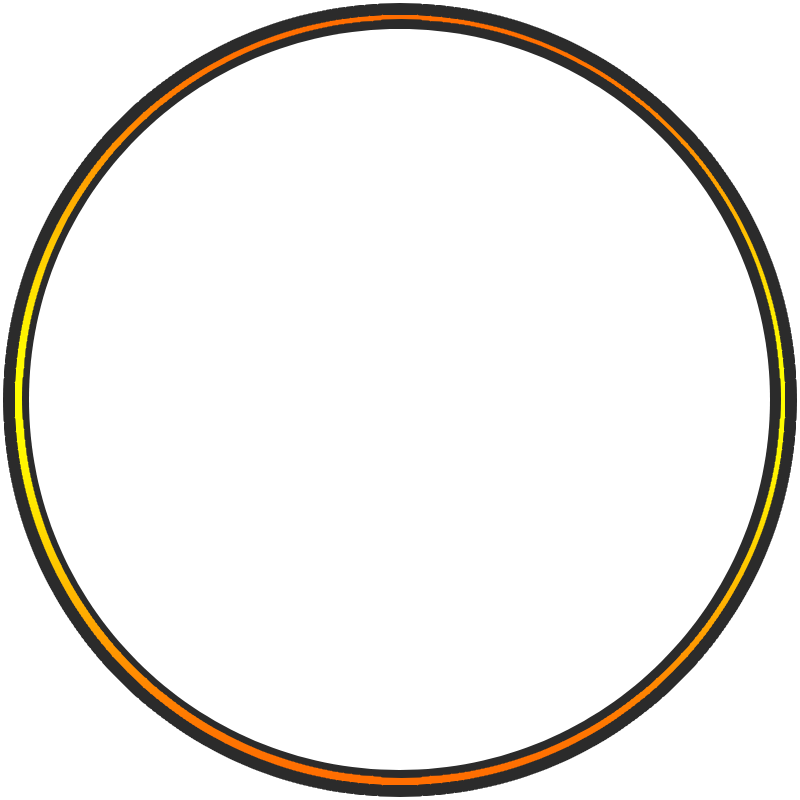

Apasionado de las tecnologías, en especial la programación web. Pertenezco a la Generación X así que destaco por tener gran capacidad laboral, soy organizado y metódico, cuento con una amplia experiencia en el sector de la informática. Me caracterizo por ser una persona proactiva y asertiva.
